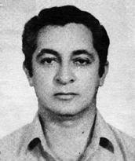

<style>
section {
        display: flex;
        flex-direction: row;
        align-items: center;
        justify-content: center;
        gap: 40px;
        margin: 40px 0;
    }


    .conteudo {
        max-width: 1000px;
        font-family: Arial, sans-serif;
        font-size: 16px;
        line-height: 1.6;
        color: #333;
        text-align: justify;
    }

    .conteudo p {
        
        margin-bottom: 16px;
    }
    img {
        width: 300px;
        height: auto;
        border-radius: 8px;
    }
</style>
<section>

    <div class="conteudo">

        <h2>CARLOS DE LAET RODRIGUES BEZERRA </h2>
        
        <p>Graduado em direito pela Universidade Católica de Goiás, turma de 1974. Atuou profissionalmente na empresa Telegoiás, onde acumulou experiência nas áreas de informática, operações e setor comercial. Ao longo de sua carreira, exerceu funções de gerente e foi Coordenador de Normas e Práticas na Assessoria de Organização e Métodos da instituição. Envolvido desde cedo com as causas regionais, foi um defensor da criação do Estado do Tocantins desde o final da década de 1950. Em 1959, já atuava ao lado do juiz Feliciano Machado Braga na mobilização em prol da emancipação do norte goiano.</p>
        <p>Entre os cargos exercidos em instituições cívicas e estudantis, destaca-se sua atuação como tesoureiro da Casa do Estudante do Norte Goiano (CENOG), tanto em Porto Nacional quanto em Goiânia, entre 1962 e 1968. Também foi tesoureiro da subcomissão da CONORTE, em Goiânia, de 1985 a 1987, e membro do Conselho Deliberativo da entidade. Mesmo em momentos de adversidade, como o veto presidencial à criação do novo estado em 1987, manteve seu engajamento político e social. Produziu e publicou diversos documentos e propostas voltadas ao desenvolvimento regional e à criação do Tocantins.</p>
        
    </div>
    <div class="imagem">
        
        </div>

    

    


</section>